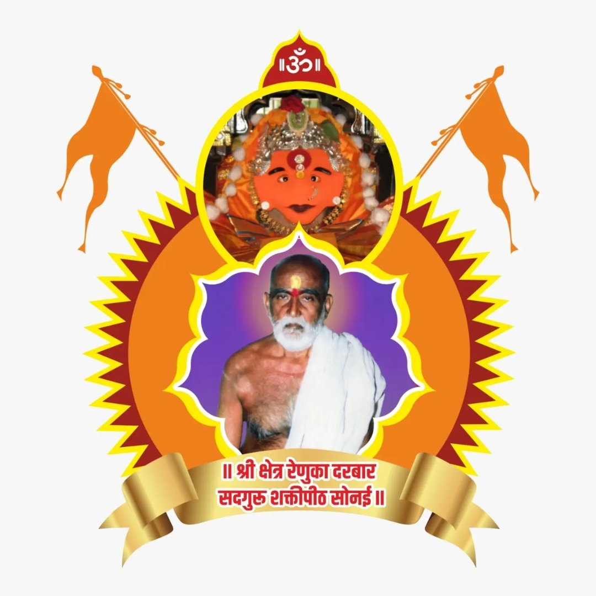
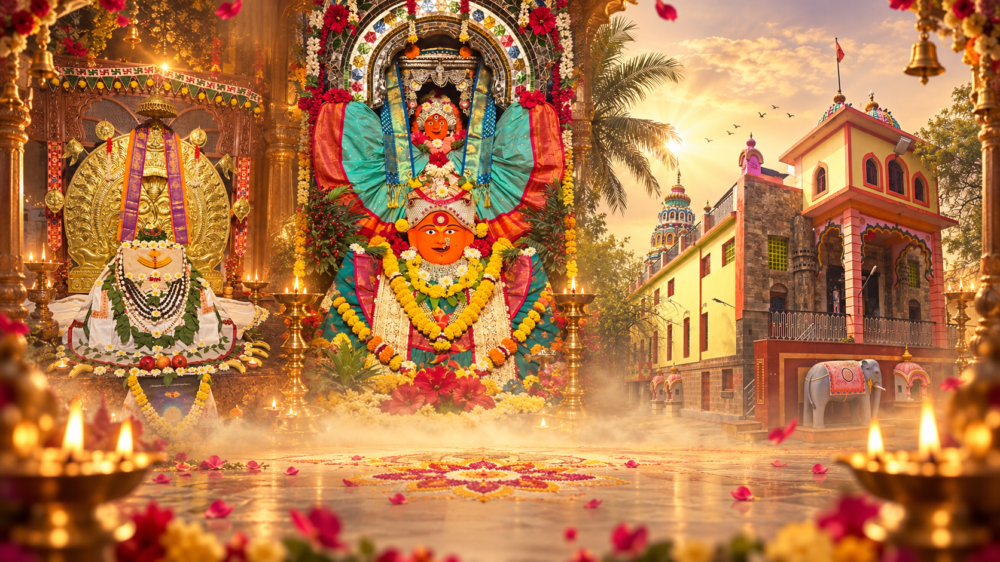
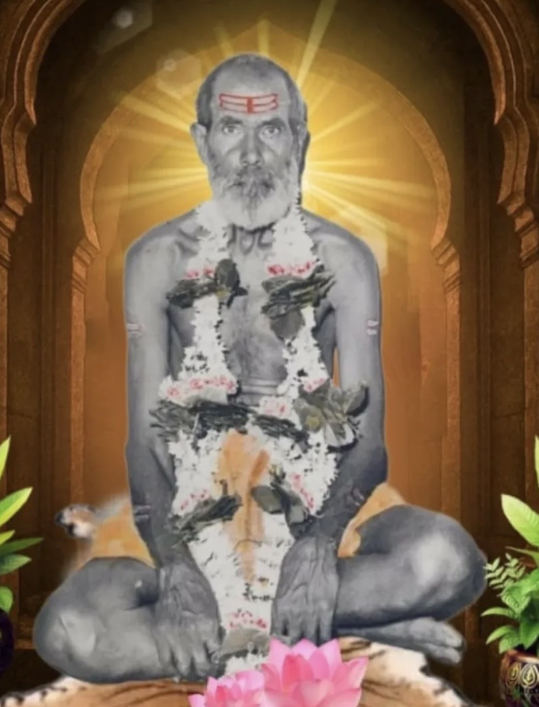
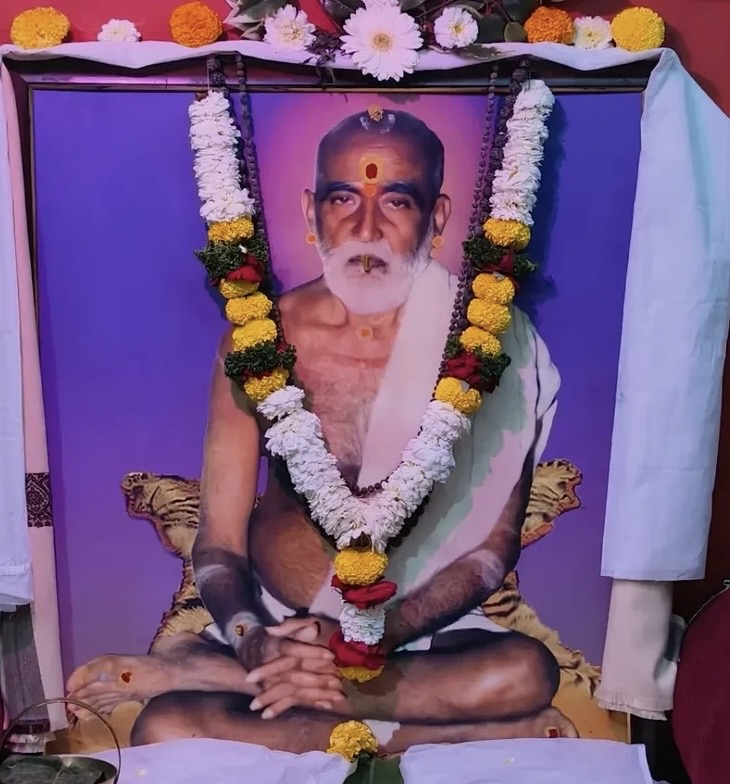
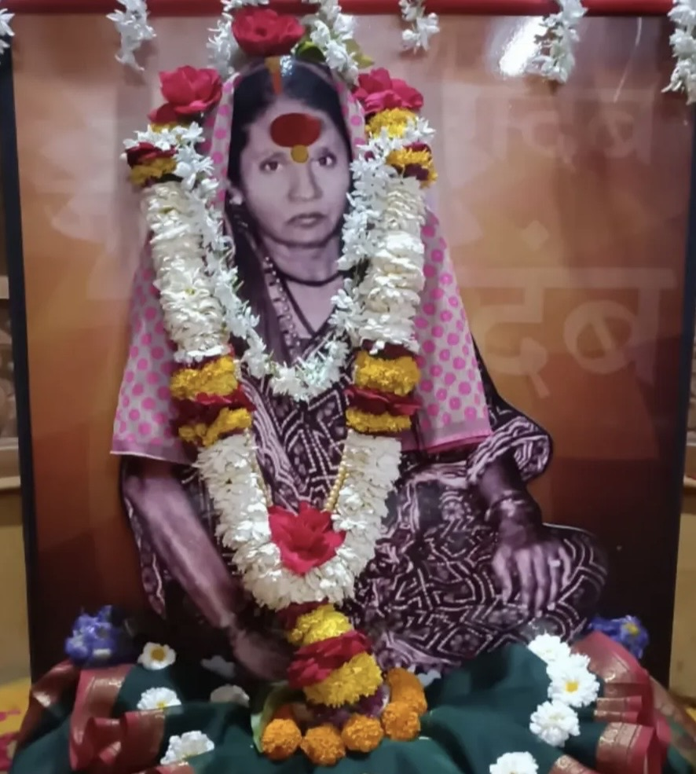
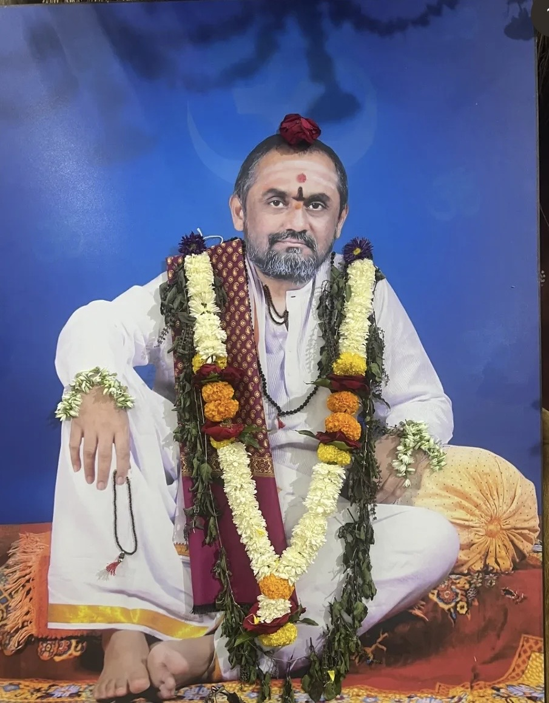
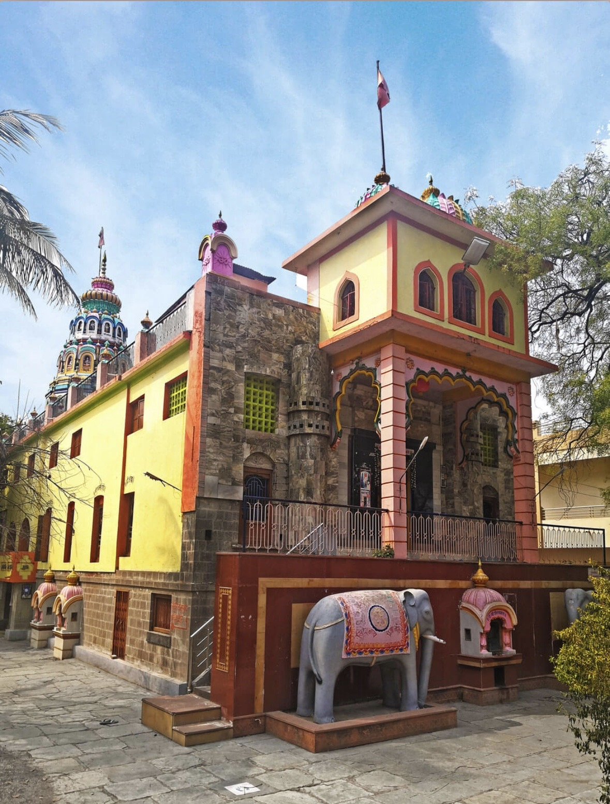
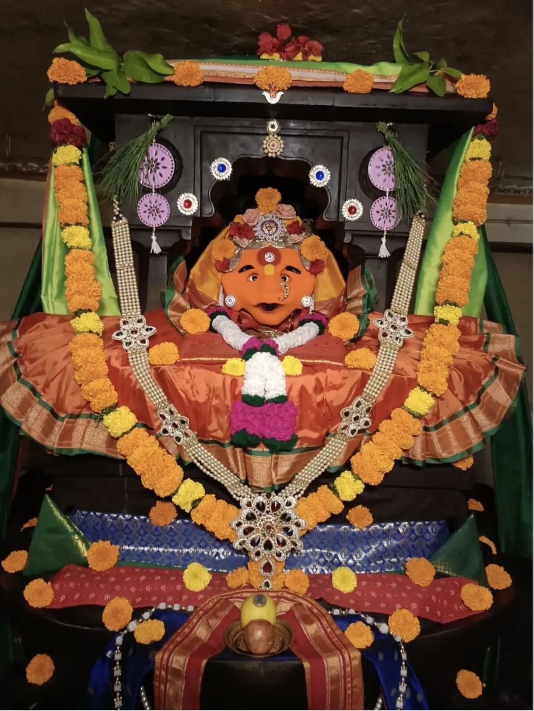

संस्थान परिचय
श्री क्षेत्र रेणुका दरबार हे श्री क्षेत्र सोनई, ता. नेवासा, महाराष्ट्र येथे स्थित श्रद्धा, साधना आणि सद्गुरू परंपरेशी जोडलेले पवित्र स्थान आहे.

प. पू. माता प्रेमानंदीनाथ महाराज पब्लिक चॅरिटेबल ट्रस्ट संचालित

श्री क्षेत्र रेणुका दरबार हे श्री क्षेत्र सोनई, ता. नेवासा, महाराष्ट्र येथे स्थित श्रद्धा, साधना आणि सद्गुरू परंपरेशी जोडलेले पवित्र स्थान आहे.
श्री रेणुका दरबार येथे भगवती श्री रेणुका मातेचे दर्शन, पूजन व अभिषेक सेवा भक्तांसाठी उपलब्ध आहेत. हे स्थान जगदंबा उपासना आणि सद्गुरू भक्तीचे केंद्र म्हणून ओळखले जाते.
सद्गुरू सिद्धनाथ महाराज आणि प. पू. कृष्णानंद सरस्वती स्वामी महाराज यांच्या मार्गदर्शनाखाली प. पू. योगीराज हंसतीर्थ स्वामी महाराजांचा परमार्थ प्रवास घडला. या परंपरेत माता प्रेमानंदीनाथ महाराजांचेही महत्त्वपूर्ण स्थान आहे.
महाराष्ट्राच्या संतपरंपरेने पावन झालेल्या भूमीत श्री क्षेत्र सोनई, ता. नेवासा येथील वेल्हेकरवाडी परिसरात श्री रेणुका दरबार हे श्रद्धा, साधना आणि भगवती उपासनेचे पवित्र स्थान विकसित झाले. प. पू. योगीराज हंसतीर्थ स्वामी महाराज (पूर्वाश्रमीचे हरिहरानंदनाथ महाराज) यांनी येथे श्री रेणुका मातेचे भव्य काचमंदिर उभारले आणि गाभाऱ्यात योगपीठासनावर श्री रेणुका मातेची स्थापना केली.
प्रारंभी प. पू. स्वामी महाराज आणि प. पू. माता प्रेमानंदीनाथ महाराज अत्यंत साध्या परिस्थितीत राहून भगवतीची अखंड उपासना करीत होते. कालांतराने नित्योपासना, कठोर साधना, धार्मिक उत्सव, अन्नदान आणि शिष्यपरिवाराच्या वाढीसह रेणुका दरबार आश्रमाचा विस्तार होत गेला.
प. पू. कृष्णानंद सरस्वती स्वामी महाराज १९६६ मध्ये समाधिस्थ झाल्यानंतर सद्गुरू आज्ञेने प. पू. योगीराज हंसतीर्थ स्वामी महाराजांनी ओंकार योगपीठासन आणि भगवती मंदिराच्या स्थापनेचे कार्य पुढे नेले. १९९१ मध्ये काचमंदिर पूर्ण होऊन कळस स्थापना झाली. मंदिर परिसरात विविध देवतांचीही भक्तिभावाने स्थापना करण्यात आली.
१९९३ मध्ये रेणुका दरबार येथे अमृत महोत्सव सोहळा संपन्न झाला. पुढे प. पू. योगीराज हंसतीर्थ स्वामी महाराज जानेवारी १९९९ मध्ये समाधिस्थ झाले. आज श्री रेणुका दरबार येथे श्री रेणुका माता, सद्गुरूंच्या पवित्र समाधी आणि अखंड चालणारी नित्योपासना भक्तांसाठी श्रद्धेचे केंद्र आहेत.






नाथपरंपरा, सद्गुरू आज्ञा आणि श्री रेणुका मातेची उपासना यांचा सुंदर संगम या परंपरेत दिसतो.
आदिनाथ-शिवापासून भगवान दत्तात्रेय, नवनाथ, निवृत्तीनाथ आणि ज्ञानेश्वर माऊलीपर्यंत चालत आलेल्या नाथपरंपरेतील सिद्धपरंपरेशी सद्गुरू सिद्धनाथ महाराजांचे स्थान जोडले जाते. त्यांनी प. पू. योगीराज हंसतीर्थ स्वामी महाराजांना उपासना, साधना आणि परंपरेविषयी वेळोवेळी मार्गदर्शन केले.
प. पू. योगीराज हंसतीर्थ स्वामी महाराजांचे प्रत्यक्ष पिता आणि सद्गुरू. आयुर्वेदाचे ज्ञान, भागवतादी ग्रंथांचा अभ्यास आणि भगवतीची नित्य उपासना ही त्यांची वैशिष्ट्ये सांगितली जातात. त्यांनी कुटीचक संन्यास स्वीकारला होता.
भाद्रपद वद्य एकादशी, इ.स. १९६६ — समाधी; समाधिस्थळ: श्री रेणुका दरबार, सोनई.पूर्वाश्रमीचे हरिहरानंदनाथ महाराज, सोनईचे अण्णा महाराज. तीव्र उपासना व साधना, श्री रेणुका मातेची सगुण उपासना, कुंकवाचा प्रसाद, संगीतोपासना, कीर्तन-प्रवचन, मूर्तिकला आणि पायी प्रवास ही त्यांच्या कार्याची वैशिष्ट्ये होती. त्यांनी अनेक शिष्यांना संसारात राहून परमार्थ साधण्याचे मार्गदर्शन केले आणि हंस दीक्षा स्वीकारली होती.
पौष वद्य एकादशी, इ.स. १९९९ — समाधी; समाधिस्थळ: श्री रेणुका दरबार, सोनई.प. पू. योगीराज हंसतीर्थ स्वामी महाराजांच्या पूर्वाश्रमातील सहधर्मचारिणी. सद्गुरूनिष्ठा, तपश्चर्या, जप-अनुष्ठान, अश्वत्थ सेवा आणि शिष्यपरिवारावरील मातृवत प्रेम यासाठी त्यांचे स्मरण केले जाते. सद्गुरुकृपेने त्यांच्या आध्यात्मिक साधनेला उच्च अवस्था प्राप्त झाल्याचे परंपरेत वर्णन आहे.
भाद्रपद वद्य चतुर्थी, इ.स. १९७८ — महानिर्वाण; समाधिस्थळ: श्री रेणुका दरबार, सोनई.प. पू. योगीराज हंसतीर्थ स्वामी महाराजांचे ज्येष्ठ पुत्र राधेश्याम, म्हणजे प. पू. नाना महाराज. त्यांनी वेदांचा अभ्यास करून विद्यार्थ्यांना वेदाध्ययन दिले. अमृत महोत्सवाच्या वेळी प. पू. स्वामी महाराजांनी त्यांना श्री शक्तीपीठ योगपीठासनाची उपासना आणि श्री रेणुकामाता मंदिर संस्थान गादीचा अधिकार दिल्याचे परंपरेत नमूद आहे.
वैशाख शुक्ल चतुर्थी, १५ मे २०२१ — शिवस्वरूप.प. पू. योगीराज हंसतीर्थ स्वामी महाराजांचे द्वितीय चिरंजीव, उमाकांत जोशी. जप, अनुष्ठान, गायत्री पुरश्चरण, यज्ञ-याग, गायन-वादन, मूर्तिकला तसेच स्तोत्र, आरती व काव्यरचना या क्षेत्रांत त्यांचे योगदान आहे. अमृत महोत्सवाच्या वेळी त्यांना श्रीशक्ती दंड देऊन शिष्यांना गुरुमंत्र देण्याचा आणि नाथपरंपरा पुढे चालविण्याचा अधिकार दिल्याचे संदर्भात नमूद आहे.
काकड आरती • सकाळची पूजा • आरती • सायंकाळची आरती


भजन, आरत्या, स्तोत्रे आणि भक्तिगीते
श्री रेणुका दरबार येथे भक्तांना विविध धार्मिक पूजा व सेवांमध्ये सहभागी होता येते.
भगवती श्री रेणुका मातेच्या चरणी अभिषेक व पूजन सेवा.
प. पू. स्वामी महाराजांच्या पवित्र समाधीस्थळी श्रद्धापूर्वक अभिषेक सेवा.
आश्रमातील विविध पूजा व धार्मिक सेवांमध्ये भक्तांना सहभागी होता येते.
परंपरेनुसार विविध तिथींना धार्मिक उत्सव व विशेष पूजन आयोजित केले जाते. चालू वर्षाच्या तारखा संस्थानकडून निश्चित झाल्यानंतर येथे प्रसिद्ध केल्या जातील.
संस्थानच्या धार्मिक व सेवाभावी उपक्रमांसाठी आपण सहकार्य करू शकता.
देणगी द्यासकाळी ५:०० ते रात्री ९:००
02427-299399
88888 12345
renukadarbarsonai@gmail.com
info@renukadarbar.org